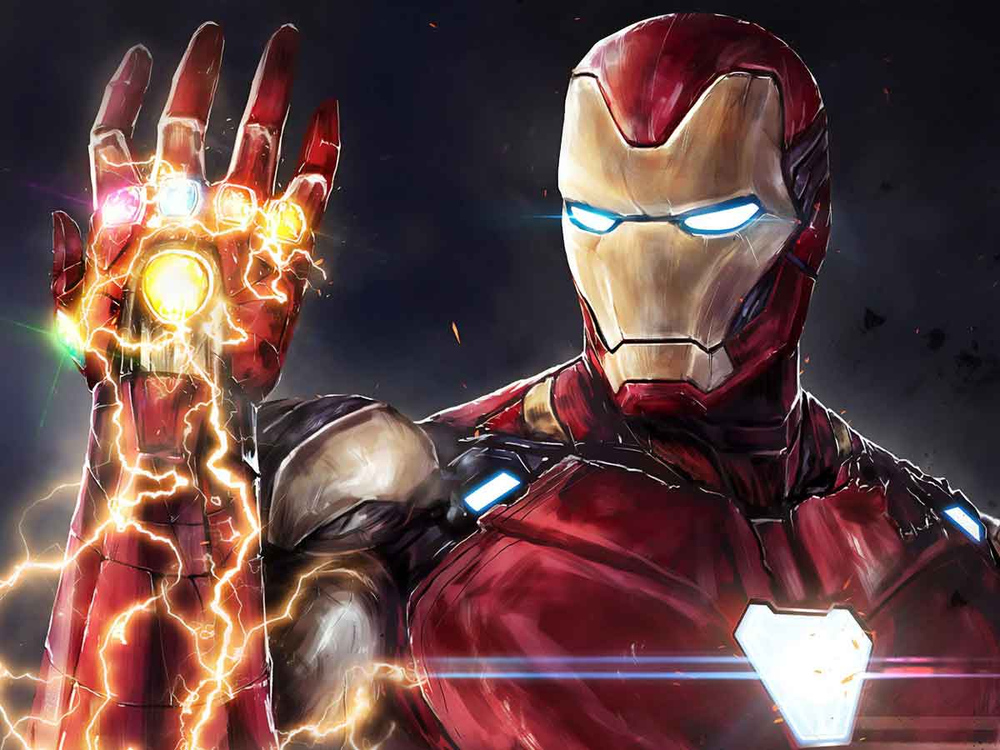
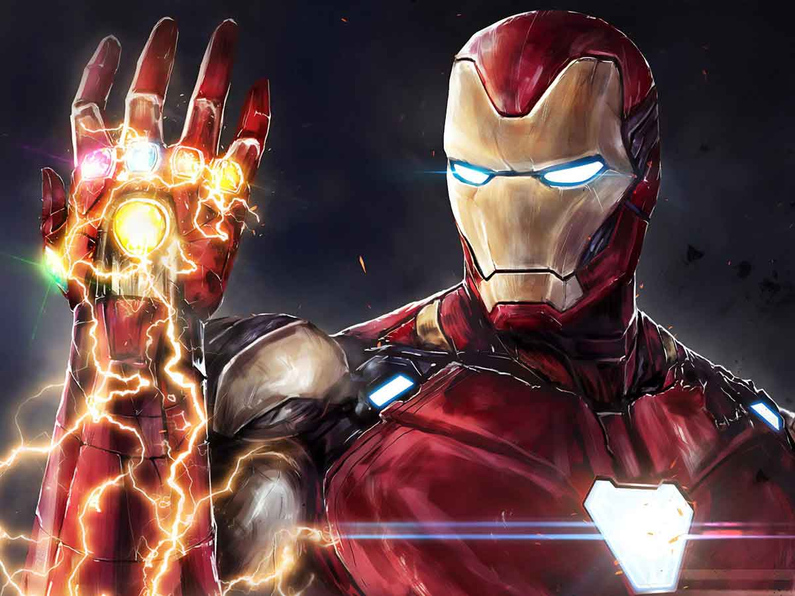

|
18 de Febrero de 2022 |
|  |
Anthony Stark nació con una inteligencia extrema. Después de la |

Comentarios destacados
|
18 de Febrero de 2022 |
|  |
Anthony Stark nació con una inteligencia extrema. Después de la |
 @Carlos_duarte_1254
@Carlos_duarte_1254  22:41
22:41